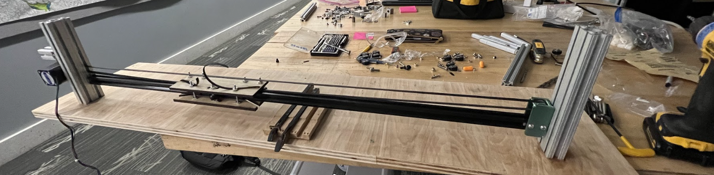

Bill of Materials and Budget
This page lists all of the materials that went into making Big Knit and includes corresponding prices to explain how we used our budget. A major goal of this project was to focus on sustainability in all respects, including our design, purpose, and materials. This meant that whenever possible we reused found materials and prioritized choosing materials with a lesser environmental impact. This constraint impacted our design throughout the project, and meant that we chose to use lots of found scrap wood rather than more optimal materials such as delrin. Whenever possible, we made our parts from the small scrap pieces of material that would otherwise go to waste. Our Bill of Materials reflects the materials used, whether they were purchased new or found/reused, and their cost. We included rough cost estimates for any materials we found or scavenged.
Go to BOM Spreadsheet